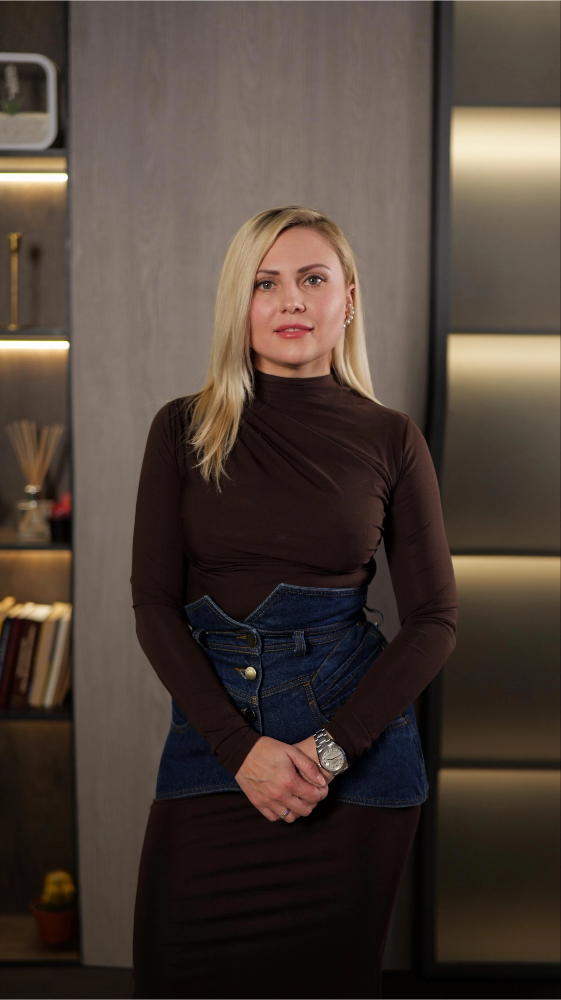

Знову опиняєтеся у стосунках, у яких вам боляче
Допоможу розібратися, чому повторюються схожі ситуації, помічати власні потреби та вибудовувати межі, щоб мати більше вибору у стосунках.
ПСИХОЛОГ У КИЄВІ ТА ОНЛАЙН
Допомагаю краще розуміти себе, виходити з болісних сценаріїв і будувати стосунки, у яких є місце вашим потребам.
Наука. Досвід. Терапія.
Кандидат психологічних наук Гештальт-терапевт Системний розстановник
Індивідуальна терапія та консультації для пар

Я працюю індивідуально з жінками й чоловіками та консультую пари. До мене можна звернутися, якщо ви:
Допоможу розібратися, чому повторюються схожі ситуації, помічати власні потреби та вибудовувати межі, щоб мати більше вибору у стосунках.
Працюватимемо над тим, щоб розуміти, що стоїть за сварками або мовчанням, говорити про складне й чути одне одного.
Допоможу впоратися з болісними переживаннями, відновлювати повсякденне життя та приймати рішення про подальші кроки.
Разом шукатимемо, що підтримує цей стан і як із ним справлятися, щоб залишалося більше сил для життя, роботи та близьких.
Вчитимемося розпізнавати ваші бажання, відмовляти без надмірного почуття провини та приймати рішення з урахуванням власних потреб.
Не обов’язково приходити з чітко сформульованим запитом. Якщо вам важко, але складно пояснити чому, ми почнемо з цього.
Тут можна бути собою

Я - Олександра Ганкевич, кандидатка психологічних наук, психологиня, гештальт-терапевтка та сімейна розстановниця. У психології понад 14 років.
У своїй роботі поєдную уважність до ваших переживань із послідовним дослідженням того, що завдає болю та заважає змінам. Допомагаю помічати звичні сценарії, краще розуміти власні потреби й знаходити нові способи діяти та будувати стосунки.
Мені важливо, щоб поруч зі мною ви могли бути собою: говорити про складне, сумніватися, злитися, не мати готових відповідей. Я підтримую, ставлю запитання й допомагаю побачити те, що буває складно помітити самостійно. Ми рухаємося у вашому темпі, з увагою до ваших сил і готовності до змін.
ПРОФЕСІЙНИЙ ШЛЯХ
Професійний шлях у документах і навчанні.
ФОРМАТИ РОБОТИ
55 хвилин
2 300 ₴
1 година 30 хвилин
3 500 ₴
4 × 55 хвилин
8 000 ₴
4 × 1 година 30 хвилин
12 000 ₴
Для кожної історії є простір бути почутою
ПРО ЩО МОЖНА ГОВОРИТИ В ТЕРАПІЇ

ВАЖЛИВЕ ПРО ТЕРАПІЮ
КОРОТКО ПРО ТЕ, ЯК МИ ПРАЦЮЄМО
На першій зустрічі ми знайомимося й говоримо про те, що вас турбує та які зміни для вас важливі. Не обов’язково заздалегідь мати чіткий запит — ми сформулюємо його разом.
Далі узгоджуємо формат і частоту зустрічей з урахуванням ваших потреб та можливостей.
Індивідуальна55 хвилин
Для пари1 година 30 хвилин
Зустрічі проходять онлайн або офлайн.
Я гарантую конфіденційність, дбайливий підхід та професійну етику.
У роботі використовую сучасні психотерапевтичні методи та науково обґрунтовані підходи.
У своїй практиці я поєдную:
Це дозволяє працювати не лише з симптомом, а з глибинними причинами стану, стосунків та життєвих сценаріїв.